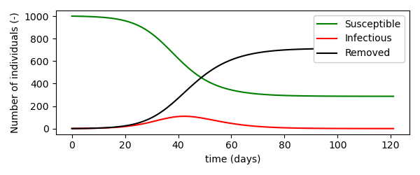

Quickstart¶
Set up a dimensionless ODE model¶
Load pySODM’s ODEModel class and define your model. As an example, we’ll set up a simple Susceptible-Infectious-Removed (SIR) disease model, schematically represented as follows,
and governed by the following equations,
# Import the ODEModel class
from pySODM.models.base import ODEModel
# Define the model equations
class SIR(ODEModel):
state_names = ['S','I','R']
parameter_names = ['beta','gamma']
@staticmethod
def integrate(t, S, I, R, beta, gamma):
# Calculate total population
N = S+I+R
# Calculate differentials
dS = -beta*S*I/N
dI = beta*S*I/N - 1/gamma*I
dR = 1/gamma*I
return dS, dI, dR
To initialize the model, provide a dictionary containing the initial values of the model states and a dictionary containing all model parameters. Undefined initial states are automatically filled with zeros.
model = SIR(states={'S': 1000, 'I': 1}, parameters={'beta': 0.35, 'gamma': 5})
Simulate the model using the sim() method. The solver method and tolerance of scipy.solve_ivp(), as well as the timesteps included in the output can be tailored. pySODM supports the use of datetime types as timesteps.
# Timesteps
out = model.sim(121)
# Dates
out = model.sim(['2022-12-01', '2023-05-01'])
# Tailor method and tolerance of integrator
out = model.sim(121, method='RK45', rtol='1e-4')
In some situations, the use of a discrete timestep with a fixed length may be preferred,
# Use a discrete timestepper with step size 1
out = model.sim(121, tau=1)
# Is equivalent to (`tau` overwrites `method`!):
out = model.sim(121, method='RK45', rtol='1e-4', tau=1)
Results are sent to an xarray.Dataset, for more information on indexing and selecting data using xarray, see.
<xarray.Dataset>
Dimensions: (time: 122)
Coordinates:
* time (time) int64 0 1 2 3 4 5 6 7 8 ... 114 115 116 117 118 119 120 121
Data variables:
S (time) float64 1e+03 999.6 999.2 998.7 ... 287.2 287.2 287.2 287.2
I (time) float64 1.0 1.161 1.348 1.565 ... 0.1455 0.1316 0.1192
R (time) float64 0.0 0.2157 0.4662 0.7569 ... 713.6 713.7 713.7 713.7
The simulation above results in the following trajectories for the number of susceptibles, infected and recovered individuals. 
Set up an ODE model with a labeled dimension¶
To transform all our SIR model’s states in 1D vectors, referred to as a dimension throughout the documentation, add the dimension_names keyword to the model declaration. Here, we add a dimension representing the age groups individuals belong to.
# Import the ODEModel class
from pySODM.models.base import ODEModel
# Define the model equations
class stratified_SIR(ODEModel):
state_names = ['S','I','R']
parameter_names = ['beta', 'gamma]
dimension_names = ['age_groups']
@staticmethod
def integrate(t, S, I, R, beta, gamma):
# Calculate total population
N = S+I+R
# Calculate differentials
dS = -beta*S*I/N
dI = beta*S*I/N - 1/gamma*I
dR = 1/gamma*I
return dS, dI, dR
When initializing the model, additionally provide a dictionary containing coordinates for every dimension declared previously. In our example, we’ll declare four age groups: 0-5, 5-15, 15-65 and 65-120 year olds. All model states are now 1D vectors of shape (4,).
model = stratified_SIR(states={'S': 1000*np.ones(4), 'I': np.ones(4)},
parameters={'beta': 0.35, 'gamma': 5},
coordinates={'age_groups': ['0-5','5-15', '15-65','65-120']})
out = model.sim(121)
print(out)
The dimension 'age_groups' with coordinates ['0-5','5-15', '15-65','65-120'] is automatically added to the model output.
<xarray.Dataset>
Dimensions: (time: 122, age_groups: 4)
Coordinates:
* time (time) int64 0 1 2 3 4 5 6 7 ... 114 115 116 117 118 119 120 121
* age_groups (age_groups) <U6 '0-5' '5-15' '15-65' '65-120'
Data variables:
S (age_groups, time) float64 1e+03 999.6 999.2 ... 287.2 287.2
I (age_groups, time) float64 1.0 1.161 1.348 ... 0.1316 0.1192
R (age_groups, time) float64 0.0 0.2157 0.4662 ... 713.7 713.7
Set up an ODE model with multiple dimensions¶
pySODM allows model states to have different coordinates and thus different sizes. As an example (without mathematical details), consider an extension of the SIR model for vector borne disease: the SIR-SI model. In the example, the S, I and R states represent the humans, and we use the state_dimensions variable to declare the humans are distributed in four age groups. The S_v and I_v states represent the vectors and infected vectors are able to transmit a disease to the humans. In turn, infected humans can pass the disease back to the vector (see flowchart). Because in some contexts having age groups for our vectors is not relevant (f.i. mosquitos), we thus assign no dimensions to the S_v and I_v states.
class ODE_SIR_SI(ODEModel):
"""
An age-stratified SIR model for humans, an unstratified SI model for a disease vector (f.i. mosquito)
"""
state_names = ['S', 'I', 'R', 'S_v', 'I_v']
parameter_names = ['beta', 'gamma']
parameter_stratified_names = ['alpha']
dimension_names = ['age_group']
state_dimensions = [['age_group'],['age_group'],['age_group'],[],[]]
@staticmethod
def integrate(t, S, I, R, S_v, I_v, alpha, beta, gamma):
# Calculate total mosquito population
N = S + I + R
N_v = S_v + I_v
# Calculate human differentials
dS = -alpha*(I_v/N_v)*S
dI = alpha*(I_v/N_v)*S - 1/gamma*I
dR = 1/gamma*I
# Calculate mosquito differentials
dS_v = -np.sum(alpha*(I/N)*S_v) + (1/beta)*N_v - (1/beta)*S_v
dI_v = np.sum(alpha*(I/N)*S_v) - (1/beta)*I_v
return dS, dI, dR, dS_v, dI_v
Setting up and simulating the model,
# Define parameters, initial states and coordinates
params={'alpha': np.array([0.05, 0.1, 0.2, 0.15]), 'gamma': 5, 'beta': 7}
init_states = {'S': [606938, 1328733, 7352492, 2204478], 'S_v': 1e6, 'I_v': 2}
coordinates={'age_groups': ['0-5','5-15', '15-65','65-120']}
# Initialize model
model = SIR_SI(states=init_states, parameters=params, coordinates=coordinates)
# Simulate the model
model.sim(120)
print(out)
results in the following xarray.Dataset. Here it can be seen that the S, I and R state have age_group and time as dimensions and their shape is thus (4,), while S_v and I_v only have time as dimension and their shape is thus (1,).
<xarray.Dataset>
Dimensions: (age_group: 4, time: 121)
Coordinates:
* age_group (age_groups) <U6 '0-5' '5-15' '15-65' '65-120'
* time (time) int64 0 1 2 3 4 5 6 7 ... 113 114 115 116 117 118 119 120
Data variables:
S (age_group, time) float64 6.069e+05 6.069e+05 ... 1.653e+06
I (age_group, time) float64 0.0 0.05178 ... 1.4e+05 1.464e+05
R (age_group, time) float64 0.0 0.00545 ... 3.76e+05 4.047e+05
S_v (time) float64 1e+06 1e+06 1e+06 ... 8.635e+05 8.562e+05
I_v (time) float64 2.0 1.798 1.725 ... 1.292e+05 1.365e+05 1.438e+05
Set up a dimensionless SDE Model¶
To stochastically simulate the simple SIR model, the SDEModel class is loaded and two functions compute_rates and apply_transitionings must be defined. For a detailed description of implenting models using Gillespie’s methods, we refer to the manuscript. The rates dictionary defined in compute_rates contains the rates of the possible transitionings in the system. These are contained in a list because a state may have multiple possible transitionings. Further, the transitioning for state I is a float and this should be a numpy.float. I’m still figuring out if I want to introduce the overhead to check and correct this behavior (likely not).
# Import the ODEModel class
from pySODM.models.base import SDEModel
# Define the model equations
class SIR(SDEModel):
state_names = ['S','I','R']
parameter_names = ['beta','gamma']
@staticmethod
def compute_rates(t, S, I, R, beta, gamma):
# Calculate total population
N = S+I+R
# Compute rates per model state
rates = {
'S': [np.array(beta*(I/N)),],
'I': [np.array(1/gamma)],
}
return rates
@staticmethod
def apply_transitionings(t, tau, transitionings, S, I, R, beta, gamma):
S_new = S - transitionings['S'][0]
I_new = I + transitionings['S'][0] - transitionings['I'][0]
R_new = R + transitionings['I'][0]
return S_new, I_new, R_new
Advanced simulation features¶
Draw function¶
The sim() method of ODEModel and SDEModel can be used to perform \(N\) repeated simulations (keyword N). Additionally a draw function can be used to update model parameters during every run. A draw function to randomly draw gamma from a uniform simulation before every run is implemented as follows,
def draw_function(param_dict, samples_dict):
param_dict['gamma'] = np.random.uniform(low=1, high=5)
return param_dict
out = model.sim(121, N=10, draw_function=draw_function, samples={})
print(out)
An additional dimension 'draws' has been added to the xarray.Dataset to accomodate the results of the repeated simulations.
<xarray.Dataset>
Dimensions: (time: 122, age_groups: 4, draws: 10)
Coordinates:
* time (time) int64 0 1 2 3 4 5 6 7 ... 114 115 116 117 118 119 120 121
* age_groups (age_groups) <U6 '0-5' '5-15' '15-65' '65-120'
Dimensions without coordinates: draws
Data variables:
S (draws, age_groups, time) float64 1e+03 999.6 ... 316.9 316.9
I (draws, age_groups, time) float64 1.0 1.007 ... 0.1644 0.1492
R (draws, age_groups, time) float64 0.0 0.3439 ... 684.0 684.0
Time-dependent parameter function¶
Parameters can also be varied through the course of one simulation using a time-dependent parameter function, which can be an arbitrarily complex function. A generic time-dependent parameter function has the timestep, the dictionary of model states and the value of the varied parameter as its inputs. Additionally, the function can take any number of arguments (including other model parameters).
def vary_my_parameter(t, states, param, an_additional_parameter):
"""A function to vary a model parameter during a simulation"""
# Do any computation
param = ...
return param
All we need to do is use the time_dependent_parameters keyword to declare the parameter our function should be applied to. Additionally, an_additional_parameter should be added to the parameters dictionary.
model = SIR(states={'S': 1000, 'I': 1},
parameters={'beta': 0.35, 'gamma': 5, 'an_additional_parameter': anything_you_want},
time_dependent_parameters={'beta': vary_my_parameter})